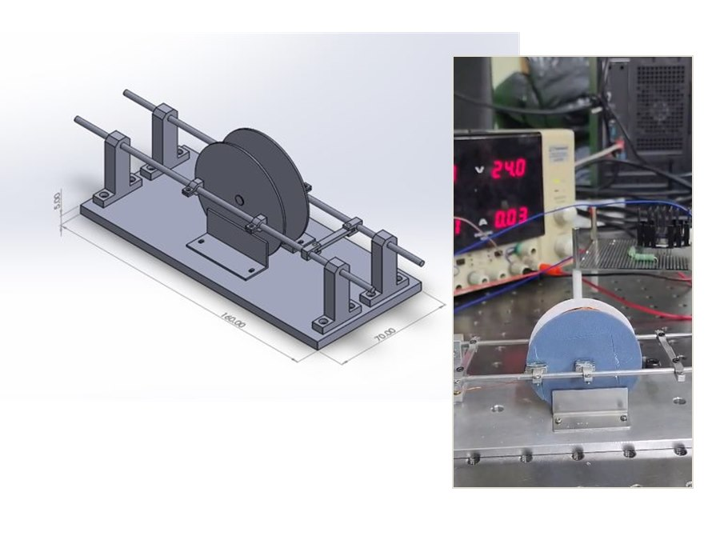
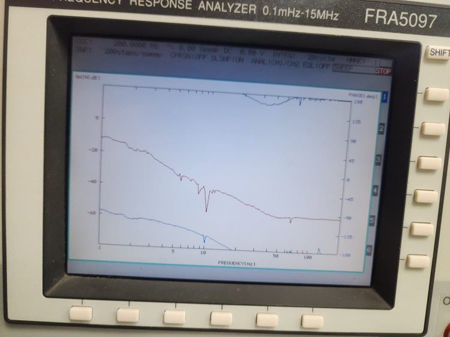
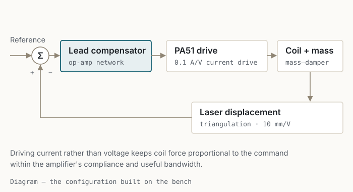
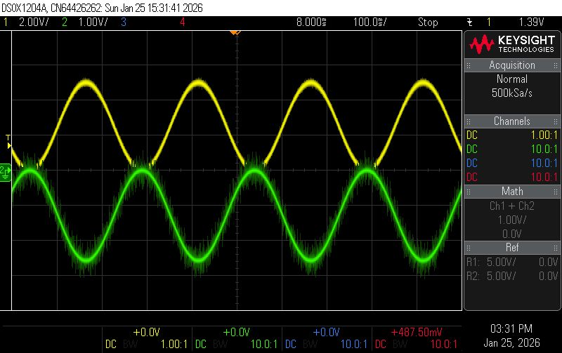
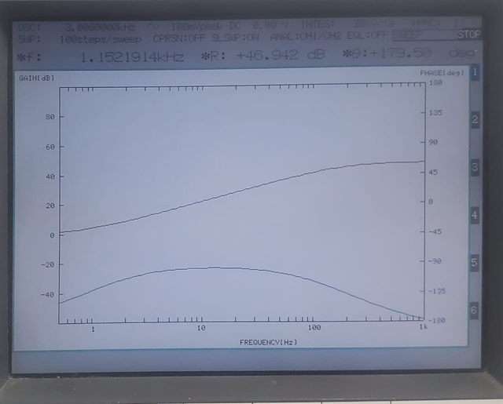
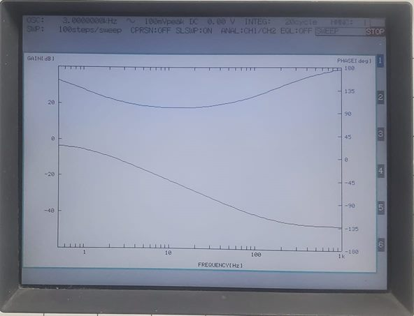
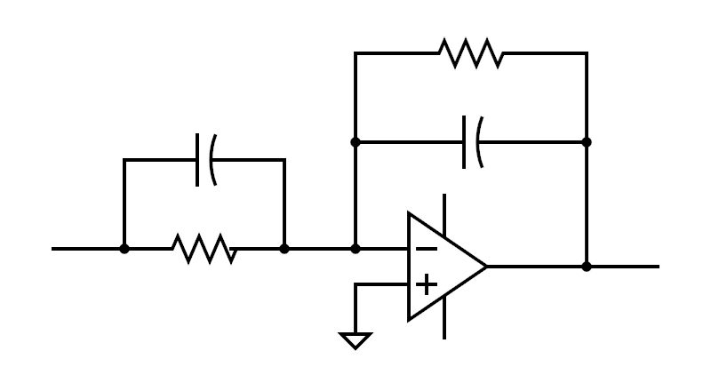
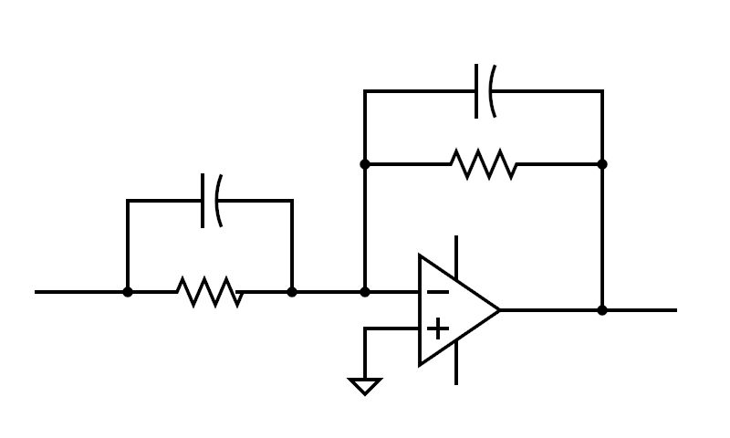

Voice-Coil Actuator Positioning System
Identification and analog feedback control of a stage with no restoring spring.

Research brief
- Objective
- Position a voice-coil stage whose plant integrates twice and supplies no phase lead of its own, using compensation designed on a measured model.
- Approach
- Design and build the stage, drive the coil from a current source, measure the open-loop frequency response, then build and measure each candidate compensator.
- Individual contribution
- Everything: CAD and fabrication, the transconductance drive stage, instrumentation, identification, and all six analog compensators.
- Experimental evidence
- Six compensators built and measured. Measured responses followed the predicted Bode trends over the observed range; lead compensation was retained and its closed-loop response verified on the bench.
A plant with nothing pulling it back
The moving assembly has mass and some damping from the guide, but no spring returning it to a rest position. Force to position is therefore a double integrator with damping — a mass–damper plant — and the measured open-loop response carries the accompanying phase.
That is the design constraint in one sentence: the plant supplies no phase lead of its own, so the compensator has to.
Before any of that could be measured, the stage had to be worth measuring. It constrains the moving mass to one axis, holds the coil concentric in the magnet assembly, and gives the laser sensor a flat, square target — otherwise the measurement records the fixture rather than the actuator.

Driving the coil with current, not voltage
A voice coil produces force in proportion to the current through it. Drive it from a voltage source and the coil's resistance, inductance and motional back-EMF sit between the command and the force, so the position loop inherits electrical dynamics as well as mechanical ones.
A voltage drive is workable if those dynamics are modelled. I chose a transconductance stage instead — a PA51 power operational amplifier configured to deliver current in proportion to its input — so that the plant presented to the compensator stays close to force-per-volt and the design problem stays mechanical. Position is measured by laser triangulation.



Six compensators, all built and all measured
Rather than settling on one controller, I built proportional, derivative, PD, PI, lead and lag compensators as op-amp circuits and measured each on the same stage. Every candidate was designed on the identified model first, so the measured response could be compared against a prediction rather than judged on feel.
The PI compensator behaved as its structure predicts: the integrator's phase lag near crossover cost more margin than the improved low-frequency tracking was worth on this plant. The lead compensator supplies phase exactly where the double integrator has none, and it was the one retained.




Moving the loop into software
After the analog work I implemented the same loop digitally on an Arduino R4 Minima: a 1 kHz control rate, a 12-bit DAC driving the same transconductance stage, integral clamping to prevent wind-up, and a Keyence IL-065 laser sensor for feedback.
This is implementation experience rather than a second set of results. The digital loop was built and run, but no measured comparison between the analog and digital closed loops was recorded, so no claim of equivalence is made.
Limitations
Not established
- Band of validity — the model was identified and checked over the frequency range that was measured. Where measurement and prediction diverge at the edges of that range, the cause was not isolated: sensor bandwidth, drive-stage limits, fixture compliance and excitation level were not separated by dedicated experiments.
- Time-domain performance — settling time, overshoot and steady-state error were not characterised as a formal benchmark set, so no positioning-accuracy figure is claimed.
- Digital comparison — the discrete implementation was not measured against the analog one.
- Scope — a single-axis teaching-scale stage with one actuator and one sensor.